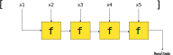

Funciones de orden superior sobre listas
Máster en Ingeniería Informática
Facultad de Informática
Universidad Complutense de Madrid
- Funciones de transformación
- Funciones de filtrado
- Funciones de plegado
Introducción
- Estudiaremos algunas funciones de orden superior sobre listas.
- Todas ellas son habituales en cualquier lenguaje funcional (y en muchos imperativos).
- En Kotlin, estos métodos forman parte de la interfaz
Iterable<T>, de la que heredaList<T>- Por tanto, funcionan con listas de la biblioteca estándar de Kotlin, así como con las listas persistentes del paquete
kotlinx.collections.immutable.
- Por tanto, funcionan con listas de la biblioteca estándar de Kotlin, así como con las listas persistentes del paquete
Funciones de transformación
Método map
fun <T, S> List<T>.map(f: (T) -> S): List<S>
Aplica la función f recibida como parámetro a cada elemento de la lista this, y construye una lista con los resultados devueltos.
Método map
Posible implementación:
fun <T, S> List<T>.map(f: (T) -> S): List<S> = when (this) {
is Nil -> Nil
is Cons -> Cons(f(head), tail.map(f))
}
Con recursión de cola:
fun <T, S> List<T>.map(f: (T) -> S): List<S> {
tailrec fun List<T>.mapAc(ac: List<S>): List<S> = when (this) {
is Nil -> ac
is Cons -> tail.mapAc(Cons(f(head), ac))
}
return mapAc(Nil).reversed()
}
Ejemplos
listOf(-2, 1, 5, 6).map { it * it }
// → [4, 1, 25, 36]
listOf(1, 6, 9, -20).map { it + 1 }
// → [2, 7, 10, -19]
listOf("Gloria", "Daniel", "Estela", "Juan").map { it.length }
// → [6, 6, 6, 4]
File("mi_fichero.txt").readLines().map { it.trim() }
Ejemplos
data class Point(val x: Int, val y: Int)
listOf(Point(1, 4), Point(6, -1), Point(-4, 5)).map { (x, y) -> x }
// → [1, 6, -4]
listOf(Point(1, 4), Point(6, -1), Point(-4, 5)).map { (x, y) -> x + y }
// → [5, 5, 1]
Método mapIndexed
fun <T, S> List<T>.mapIndexed(f: (Int, T) -> S): List<S>
Similar a map, pero la función f pasada como parámetro también recibe el índice de cada elemento de la lista.
listOf("A", "B", "C").mapIndexed { idx, x -> Pair(idx, x) }
// → [(0, "A"), (1, "B"), (2, "C")]
// Lo anterior equivale a:
listOf("A", "B", "C").mapIndexed(::Pair)
Método flatMap
fun <T, S> List<T>.flatMap(f: (T) -> List<S>): List<S>
Similar a map, pero aplana la lista resultante, concatenando todos los resultados.
Posible implementación:
fun <T, S> List<T>.flatMap(f: (T) -> List<S>): List<S>
= map(f).concat() // concat() implementada en Hoja 2, ejercicio 7
Ejemplo
fun trimAndJoin(inputFiles: List<String>, outputFile: String) =
File(outputFile).writeText(
inputFiles.flatMap { File(it).readLines() }
.map { it.trim() }
.joinToString("\n")
)
Recibe una lista inputFiles de nombres de ficheros, concatena sus líneas, y elimina los espacios al principio y final de cada una de ellas, guardando el resultado en otro fichero outputFile.
Funciones de filtrado
Método filter
fun <T> List<T>.filter(f: (T) -> Boolean): List<T>
Devuelve una lista con aquellos elementos de this para los que la función f devuelve true.
Ejemplos
listOf(1, 6, 4, 3, 5).filter { it % 2 == 0 }
// → [6, 4]
listOf(Point(3, -3), Point(1, 5), Point(0, 3), Point(-1, -1))
.filter { (x, y) -> x >= 0 && y >= 0 }
// → [Point(1, 5), Point(0, 3)]
fun comienzaPorVocal(s: String) =
s.isNotEmpty() && s[0].uppercaseChar() in listOf('A', 'E', 'I', 'O', 'U')
listOf("Manuel", "Oscar", "Aaron", "Irene", "Daniela").filter(::comienzaPorVocal)
// → ["Oscar", "Aaron", "Irene"]
Variantes de filter
filterNot
Funciona igual quefun <T> List<T>.filterNot(f: (T) -> Boolean): List<T> = this.filter { !f(it) }filter, pero devuelve los elementos para los que la funciónfdevuelvefalse.filterIndexed
Igual quefun <T> List<T>.filterIndexed(f: (Int, T) -> Boolean): List<T>filter, pero la funciónfrecibe también el índice del elemento de la lista.
Funciones de plegado
Método fold
fun <T, A> List<T>.fold(ini: A, f: (A, T) -> A): A
- Supongamos que
thises la lista[x1, ..., xn]. - Si denotamos mediante
y⊕zel resultado de la expresiónf(y, z),foldcalcula el resultado de la siguiente expresión:
(...((ini ⊕ x1) ⊕ x2) ⊕ ... ) ⊕ xn
Método fold
fun <T, A> List<T>.fold(ini: A, f: (A, T) -> A): A = when (this) {
is Nil -> ini
is Cons -> tail.fold(f(ini, head), f)
}
Ejemplos
- Sumar todos los elementos de una lista de enteros:
fun List<Int>.sum() = this.fold(0) { ac, x -> ac + x }o, equivalentemente:fun List<Int>.sum() = this.fold(0, Int::plus) - Por ejemplo:
listOf(6, -1, 3, 4).sum() // → 12
Ejemplos
- Multiplicar todos los elementos de una lista de enteros:
fun List<Int>.multiply() = this.fold(1, Int::times) - Por ejemplo:
listOf(6, -1, 3, 4).multiply() // → -72
Ejemplos
- Invertir el orden de los elementos de una lista:
fun <T> List<T>.reversed() = fold(Nil) { ac: List<T>, x: T -> Cons(x, ac) } - Contar el número de veces que aparece un elemento en una lista:
fun <T> List<T>.count(elem: T) = fold(0) { ac, x -> if (x == elem) ac + 1 else ac } - Contar el número de elementos para los que los que una función devuelve
true:fun <T> List<T>.count(f: (T) -> Boolean) = fold(0) { ac, x -> if (f(x)) ac + 1 else ac }
Método foldRight
fun <T, A> List<T>.foldRight(ini: A, f: (T, A) -> A): A
Similar a fold, pero recorre la lista de derecha a izquierda:
x1 ⊕ (x2 ⊕ ... ⊕ (xn-1 ⊕ (xn ⊕ ini))...)
Método foldRight
fun <T, A> List<T>.foldRight(ini: A, f: (T, A) -> A): A = when (this) {
is Nil -> ini
is Cons -> f(head, tail.foldRight(ini, f))
}
Ejemplo
- Concatenar dos listas:
operator fun <T> List<T>.plus(other: List<T>) = this.foldRight(other, ::Cons)
Variantes de fold y foldRight
reduceyreduceRightfun <T> List<T>.reduce(f: (T, T) -> T): T fun <T> List<T>.reduceRight(f: (T, T) -> T): T- Similares a
foldyfoldRight, pero utilizan el primer/último elemento de la lista como valor inicial del acumulador. - Si se aplican a la lista vacía, se lanza una excepción.
- Similares a
Método reduce

Ejemplo:
fun List<Int>.max()
= this.reduce { ac, y -> if (y > ac) y else ac }
Método scan
Similar a fold, pero devuelve los resultados intermedios del acumulador tras recorrer cada elemento.
Método scan
Ejemplos:
listOf(1, 7, 3, 2, 0, 3).scan(0, Int::plus)
// → [0, 1, 8, 11, 13, 13, 16]
listOf("A", "B", "C").scan("", String::plus)
// → ["", "A", "AB", "ABC"]
En otros lenguajes imperativos
| C++ | Python | Javascript | Haskell | |
|---|---|---|---|---|
map |
transform |
map |
map |
map |
filter |
copy_if |
filter |
filter |
filter |
fold |
accumulate |
reduce |
reduce |
foldl |
foldRight |
accumulate |
reduce |
reduceRight |
foldr |
Bibliografía
-
Kotlin Standard Library
InterfazList<T>